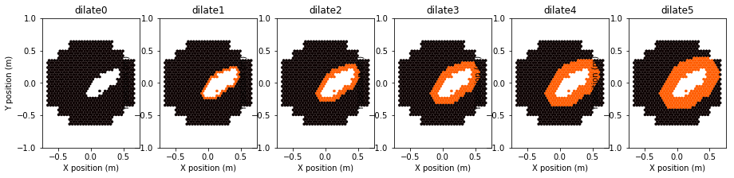

Image Cleaning¶
Cleaning/denoising of images (tailcuts cleaning, dilation, filtering).
An example of image cleaning and dilation:
API Reference¶
ctapipe.image.cleaning Module¶
Image Cleaning Algorithms (identification of noisy pixels)
Functions¶
|
Clean an image by selection pixels that pass a two-threshold tail-cuts procedure. |
|
Add one row of neighbors to the True values of a pixel mask and return the new mask. |